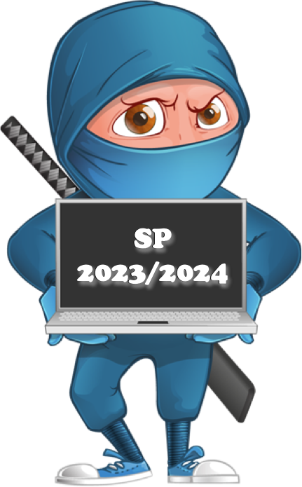
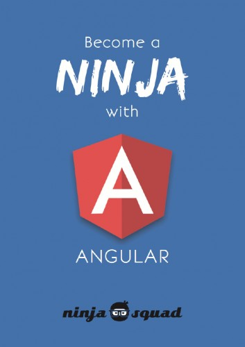

Spletno programiranje 2023/2024
sreda, 14. februar, 2024
Uvod
Skripta pri predmetu Spletno programiranje, ki ga v študijskem letu 2023/2024 izvaja izr. prof. dr. Dejan Lavbič na Fakulteti za računalništvo in informatiko, Univerze v Ljubljani.

Pri predmetu se bomo posvetili pregledu nad tehnologijami, ki se uporabljajo pri delovanju spleta, spletnih strežnikov, brskalnikov, spletnih aplikacij in verige blokov.
Pregledali bomo osnove izdelave in oblikovanja spletnih strani (HTML5 in CSS3), jih nadgradili s pregledom tehnologij na strani odjemalca (JavaScript) in strežnika (Node.js) ter implementirali REST API dostop do podatkovne baze (MongoDB). Aplikacijo bomo varnostno nadgradili, jo s pomočjo pametne pogodbe povezali s porazdeljeno verigo blokov (Ethereum) in ji dodali progresivne funkcionalnosti (PWA).
Cilj predmeta je podati širino znanj, povezanih z delovanjem raznovrstnih sodobnih spletnih tehnologij in razvojnih okolij in študenta usposobiti za samostojno učenje novih heterogenih tehnologij v razvoju ter ga seznaniti s celostnim razvojem porazdeljenih in decentraliziranih spletnih aplikacij.
Splošne informacije
Dodatno gradivo pri predmetu je na voljo na spletni učilnici, medtem ko vsa komunikacija pri predmetu prav tako poteka preko forumov na spletni učilnici.
Predavatelj
|
izr. prof. dr. Dejan Lavbič
|
Asistent
|
as. Sandi Gec
|
Terminski plan izvajanja predmeta
Predavanja potekajo v torek med 8:00 in 11:00 v predavalnici P1, z vmesnimi 15 min odmori.
Vaje se začnejo 2. teden (od 9. 10. 2022 naprej), termini posameznih ciklov so na voljo na urniku.
Vsebina pri predmetu je razdeljena na naslednje sklope:
- 1. sklop : Uvod v spletno programiranje (MEAN, HTML in CSS),
- 2. sklop : JavaScript - programski jezik spleta na strani odjemalca in strežnika (MVC, gostovanje na oblaku),
- 3. sklop : Zaledni del in dostop do podatkov (REST API),
- 4. sklop : Uporabniški vmesnik (Angular, SPA in avtentikacija),
- 5. sklop : Decentralizirane aplikacije in veriga blokov (DApps, Web3) in
- 6. sklop : Dodatne funkcionalnosti (varnost, PWA).
| Termin | Predavanja | Vaje | Delo doma |
|---|---|---|---|
| 1. sklop : Uvod v spletno programiranje (MEAN, HTML in CSS) | |||
|
1. teden |
P1.1 Svetovni splet in celostni razvoj programske opreme | Vaje se v tem tednu ne izvajajo. | Registracija in oddaja Github računov, izbira skupine za izdelavo LP ter izpolnjevanje začetnega vprašalnika |
|
2. teden |
P1.2 Osnovna spletna standarda HTML in CSS | V1.1 Git repozitorij in zaslonske maske | Delo na 1. LP (1. del) dinamični spletni aplikaciji na strani strežnika in odjemalca, rok za oddajo je ponedeljek, 18. 12. 2023 ob 6:00 |
| 2. sklop : JavaScript - programski jezik spleta na strani odjemalca in strežnika (MVC, gostovanje na oblaku) | |||
|
3. teden |
P2.1 JavaScript, jezik svetovnega spleta | V1.2 HTML in CSS | Delo na 1. LP (1. del) |
|
4. teden |
P2.2 Node.js, MVC in različna okolja | V2.1 JavaScript in osnove Node.js | Delo na 1. LP (2. del) |
|
5. teden 30. 10. 23–05. 11. 23 Dan reformacije (torek, 31. 10.), Dan spomina na mrtve (sreda, 01. 11.) |
Predavanja in vaje zaradi praznikov odpadejo. | Delo na 1. LP (2. del) | |
| 3. sklop : Zaledni del in dostop do podatkov (REST API) | |||
|
6. teden |
P3.1 Podatkovna baza in REST API | V2.2 Node.js na strani strežnika in gostovanje | Delo na 1. LP (3. del) |
|
7. teden |
P3.2 Načrtovanje s Swagger in OpenAPI | V3.1 MongoDB, Mongoose in REST API | Delo na 1. LP (3. del) |
| 4. sklop : Uporabniški vmesnik (Angular, SPA in avtentikacija) | |||
|
8. teden |
P4.1 TypeScript in Angular | V3.2 Dokumentiranje in testiranje REST API | Delo na 1. LP (4. del) |
|
9. teden |
P4.2 Angular SPA | V4.1 Angular | Delo na 1. LP (4. del) |
|
10. teden |
P4.3 Preverjanje istovetnosti uporabnika | V4.2 SPA in varnost | Delo na 1. LP (4. del) |
| 5. sklop : Decentralizirane aplikacije in veriga blokov (DApps, Web3) | |||
|
11. teden |
P5.1 DApps, pametne pogodbe in Solidity | V5.1 Ethereum in pametne pogodbe in konzultacije za 1. LP | Izbira termina za zagovor LP in delo na 1. LP (4. del) |
|
12. teden 18. 12. 23–24. 12. 23 (1. LP) |
P5.2 Truffle in Web3 | Zagovor 1. LP | Delo na 2. LP decentralizirani aplikaciji na verigi blokov, rok za oddajo je ponedeljek, 8. 1. 2024 ob 6:00 |
|
13. teden 25. 12. 23–31. 12. 23 Božič (ponedeljek, 25. 12.) |
Predavanja in vaje zaradi praznikov odpadejo. | Delo na 2. LP | |
| 6. sklop : Dodatne funkcionalnosti (varnost, PWA) | |||
|
14. teden 01. 01. 24–07. 01. 24 Novo leto (ponedeljek, 01. 01.), Novo leto (torek, 02. 01.) |
Predavanja zaradi praznikov odpadejo. | V5.2 Web3 | Delo na 2. LP |
|
15. teden 08. 01. 24–14. 01. 24 (2. LP) |
P6.1 Varnost spletnih aplikacij, testiranje in PWA | Zagovor 2. LP | - |
|
16. teden |
Predavanja in vaje se ne izvajajo. Predlog končnih ocen za študente, ki so aktivno sodelovali pri sprotnih obveznosti. | Izbira načina opravljanja pisnega izpita, potrditev predlagane končne ocene (za študente, ki jim je bila predlagana). | |
Pravila igre
Predavanja
Predavanja trajajo 3h / teden in bodo praktično usmerjena, saj bomo skozi semester demonstrirali celostni razvoj programske opreme na izbranem primeru od začetne ideje do delujoče različice, ki jo bomo tudi gostili na javnem spletnem naslovu. Najprej bomo z različnimi spletnimi tehnologijami razvili dinamično spletno aplikacijo, ki bo preko REST API-ja povezana na podatkovno bazo. V naslednjem koraku pa bomo nadgradili uporabniški vmesnik tako, da bomo zgradili SPA aplikacijo na eni strani. Na koncu bo sledila še nadgradnja v skladu s pristopom Spleta 3.0, kjer bo aplikacija komunicirala s porazdeljeno verigo blokov.
Izvorna koda primerov s predavanj je na voljo v repozitoriju SP-2023-2024/Snippets, demo aplikacije, ki jo bomo razvijali na predavanjih, pa v repozitoriju SP-2023-2024/Demo.
Za dodatne točke pri predmetu bo ocenjeno tudi (neobvezno) sodelovanje na predavanjih.
Vaje
Osrednji cilj vaj je pomoč pri razvoju lastnega projekta (LP), ki ga bo vsak študent, na izbrani problemski domeni, v skupini razvijal od začetka do delujoče različice. Na vajah bodo potekale predvsem konzultacije glede razvoja lastnega projekta in zagovor 2 delov lastnega projekta (LP):
- 1. LP - Dinamična spletna aplikacija na strani strežnika in odjemalca,
- 1. del - osnutek aplikacije in wireframe model,
- 2. del - arhitektura aplikacije in različna razvojna okolja,
- 3. del - zaledni del in dostop do podatkovne baze,
- 4. del - uporabniški vmesnik, SPA in avtentikacija,
- 2. LP - Decentralizirana aplikacija na verigi blokov,
kjer bo skupna ocena določena po spodnji formuli:
\[\begin{equation} \begin{aligned} \textbf{Lastni projekt (LP)} = &\ 70\ \% \cdot \textbf{1. LP}\ \color{gray}{\small \text{(dinamična spletna aplikacija na strani strežnika in odjemalca)}}\ + \\ &\ 30\ \% \cdot \textbf{2. LP}\ \color{gray}{\small \text{(decentralizirana aplikacija na verigi blokov)}} \end{aligned} \end{equation}\]
Povzetek funkcionalnih zahtev je prikazan na spodnji sliki, medtem ko bodo podrobnosti na voljo za vsak posamezen del lastnega projekta, v skladu s terminskim načrtom.
Naloge boste oddajali v elektronski obliki preko spletne učilnice, sistema GitHub in povezave na delujočo aplikacijo. Vsak posamezen del lastnega projekta boste zagovorili v terminu svojih vaj, kjer so predvideni roki za oddajo in zagovor opredeljeni v terminskem planu izvajanja predmeta.
Ocenjevanje
Končna ocena pri predmetu bo določena po spodnji formuli:
\[\begin{equation} \begin{aligned} \textbf{Končna ocena} = &\ 30\ \% \cdot \textbf{LP}\ \color{gray}{\small \text{(sprotno delo v obliki lastnega projekta)}}\ + \\ &\ 70\ \% \cdot \textbf{Pisni izpit}\ \color{gray}{\small \text{(končno preverjanje znanja preko spletne učilnice)}} \end{aligned} \end{equation}\]
Priporočena literatura
|
|
|
|
|
|
|
|
|
|
 |
|
|
|
|


{kind=link}
{kind=link}
Choose your language
Students whose mother tongue is not Slovene can choose to translate the contents of the script into the selected language.